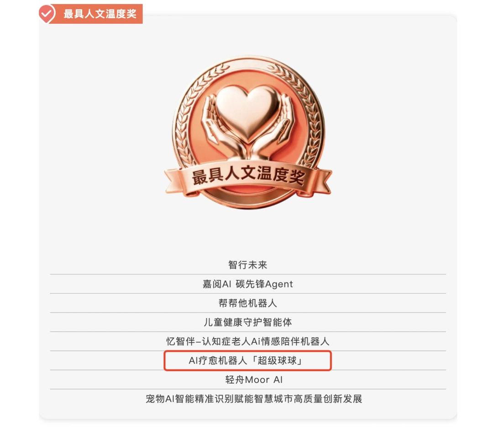
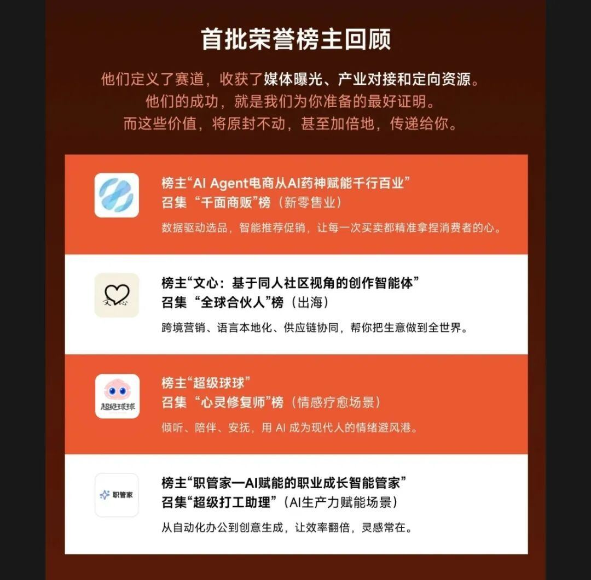

同时，“超级球球”还获得了⼤赛的特别奖项之⼀最具⼈⽂温度奖。
AI Agent 2025⼤赛 是由中国⼈⼯智能学会主办的全球顶级⼈⼯智能开发者竞赛，聚焦AIAgent技术应⽤与产业落地。⽬前，已有世界各地的1000多⽀顶尖AI团队报名参加。
⼤赛赛程设置有第⼀轮巡回赛线上积分赛、第⼀轮巡回赛线下半决赛、第⼆轮巡回赛线下半决赛等环节。
今年8⽉，“超级球球”团队作为⼤赛“领航员计划”成员受邀参赛，并且成为了“⼼灵修复师榜”榜主。9⽉，⼜成为⼤赛⾸批34个官⽅推荐项⽬。


此次成功晋级顶级AI⼤赛的线下半决赛，再次体现了“超级球球”的项⽬⽔准和市场潜⼒。